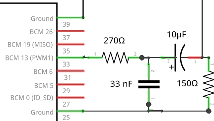
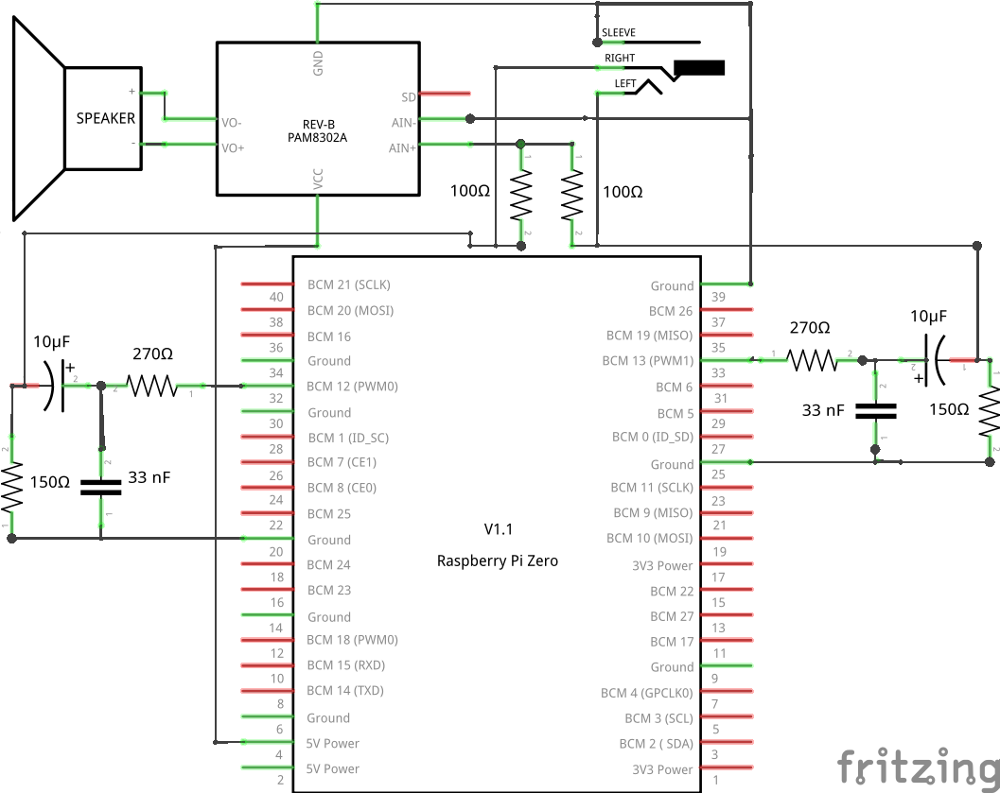
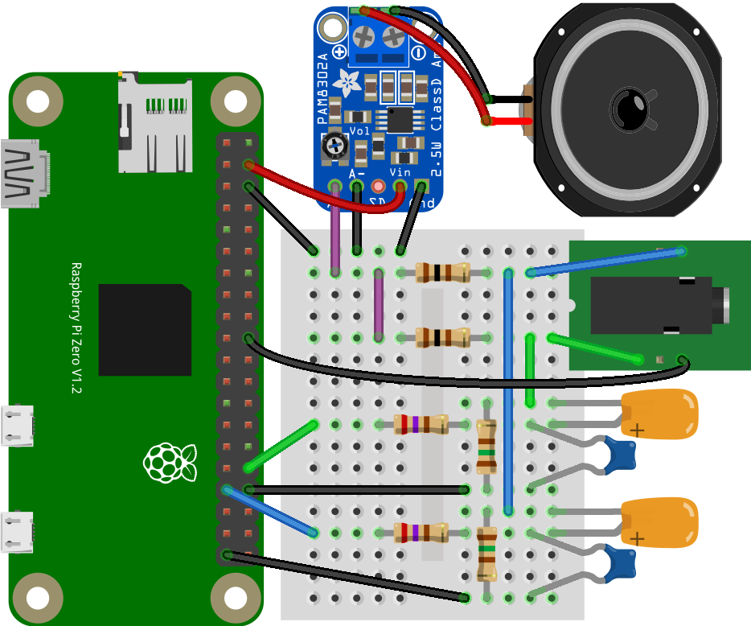

Der Raspberry Pi Zero hat keinen analogen Audio Ausgang. Allerdings kann dieser mit nur zwei Widerständen und zwei Kondensatoren selbst erstellt werden.
Grundsätzliches
Der Raspberry Pi Zero hat keinen analogen Audio Ausgang bzw. Kopfhöreranschluss (3,5 mm Klinkenbuchse) wie der Raspberry Pi Model A und B. Nun gibt es drei Möglichkeiten zu einem Audioausgang zu kommen.
Per USB-Soundkarte per I2S oder per PWM-Ausgang. Eine USB-Soundkarte würde den einzigen USB-Steckplatz belegen. I2S benötigt einen I2S-Kontroller Platine sowie einige GPIOs. Der PWM-Ausgang lässt sich hingegen mit nur zwei Widerständen und zwei Kondensatoren am einfachsten realisieren.
Der Raspberry Pi hat an den GPIOs nur PWM0 und PWM1 zur Verfügung. Will man also Stereo-Audio realisieren, so werden beide PWM-Ausgänge belegt.
Der so erstellte Audio-Ausgang entspricht der Ausführung auf den ersten Raspberry Pis. Später wurde der Ausgang noch mit einem Verstärker und einer stabilen Spannung verbessert.
Schaltung
An dem PWM-Ausgang wird ein Bandpass in Form einen Hochpass und Tiefpass RC-Filter angeschlossen. Man benötigt hierzu also folgende Schaltung:

Der Tiefpass besteht aus einem 270 Ohm Widerstand und einem 33 nF Kondensator. Der Hochpass besteht aus einem 150 Ohm Widerstand und einem 10 µF Kondensator. Danach kann der Ausgang bereits an einem Kopfhörer angeschlossen werden.
Möchte man allerdings einen Lautsprecher anschließen so benötigt man noch einen Audio-Verstärker. Hier empfiehlt sich ein PAM8302 für Mono oder PAM8403 für Stereo.


Wenn eine Mono Lautsprecher verwendet wird, aber Stereo-Audio vorhanden ist, so kann man die Ausgänge vor dem Verstärker über zwei 100 Ohm Widerstände zusammenführen (so wie in der Schaltung zu sehen). Achtung das Zusammenführen ohne Widerstände ergibt einen Kurzschluss!
Hat man Mono-Audio aber zwei Audio Kanäle am Kopfhöreranschluss, so kann man Anschluss L und R einfach direkt an Mono anschließen. Dadurch wird der Widerstand halbiert, also bei 2 Lautsprechner mit 8 Ohm ergibt sich dann ein Widerstand von 4 Ohm für den Verstärker.
Konfiguration
Mit der Schaltung allein ist es noch nicht getan. Man muss den PWM-Ausgang bzw. die PWM-Ausgänge so umkonfigurieren, dass das Audio-Signal erzeugt wird. Dazu muss man lediglich einen Devicetree Eintrag in der Konfigurationsdatei “config.txt” einfügen. Hier ist zu wissen, dass die PWM-Ausgänge auf einen von zwei möglichen GPIOs liegen können. PWM0 auf GPIO18 oder GPIO12 und PWM1 auf GPIO13 oder GPIO19. Dadurch ergeben sich mehrere Konfigurationsmöglichkeiten.
Mono:
dtoverlay=pwm,pin=12,func=4
dtoverlay=pwm,pin=18,func=2
dtoverlay=pwm,pin=13,func=4
dtoverlay=pwm,pin=19,func=2
Stereo:
dtoverlay=pwm-2chan,pin=18,func=2,pin2=13,func2=4
dtoverlay=pwm-2chan,pin=12,func=4,pin2=13,func2=4
dtoverlay=pwm-2chan,pin=12,func=4,pin2=19,func2=2
dtoverlay=pwm-2chan,pin=18,func=2,pin2=19,func2=2
Test
Nach dem Neustart muss nun nur noch ein Test erfolgen.
Stereo Links & Rechts:
speaker-test -t sine -f 440 -c 2
Stereo Links:
speaker-test -t sine -f 440 -c 1 -s 1
Stereo Rechts:
speaker-test -t sine -f 440 -c 1 -s 2
Verlinkungen
Ausführliche Informationen zur Nutzung von PWM findet man bei http://librpip.frasersdev.net/peripheral-config/pwm0and1/.